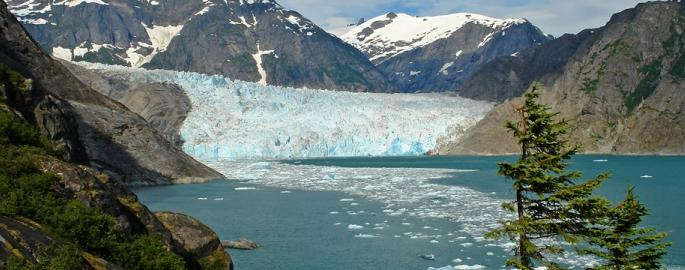
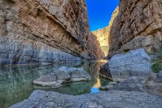
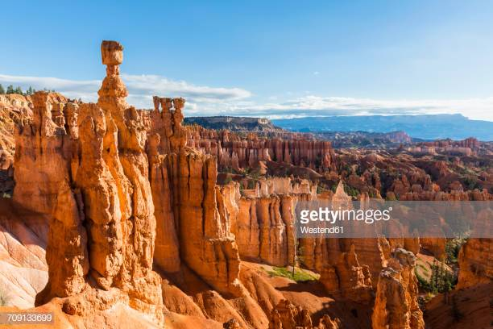

What government agency oversees the National Park Service?
The National Park Service is a bureau of the Department of the Interior. Directly overseeing its operation is the department's Assistant Secretary for Fish, Wildlife and Parks.
How many employees are in the National Park Service?
Permanent, temporary, and seasonal employees: More than 20,000
Volunteers: More than 315,000 in 2017
How old is the National Park System?
The National Park Service was created by an act signed by President Woodrow Wilson on August 25, 1916. Yellowstone National Park was established by an act signed by President Ulysses S. Grant on March 1, 1872, as the nation's first national park. View the National Park System timeline.
What is the origin of the National Park Service arrowhead?
The arrowhead was authorized as the official National Park Service emblem by the Secretary of the Interior on July 20, 1951. The components of the arrowhead may have been inspired by key attributes of the National Park System, with the sequoia tree and bison representing vegetation and wildlife, the mountains and water representing scenic and recreational values, and the arrowhead itself representing historical and archeological values.
How many areas are in the National Park System?
The system includes 417 areas covering more than 85 million acres in every state, the District of Columbia, American Samoa, Guam, Puerto Rico, and the Virgin Islands. These areas include national parks, monuments, battlefields, military parks, historical parks, historic sites, lakeshores, seashores, recreation areas, scenic rivers and trails, and the White House. Learn more about national park designations. See the complete list of National Park Service units and affiliated areas by type and number.
What is the largest national park site? Smallest?
Largest: Wrangell-St. Elias National Park and Preserve, AK, at 13.2 million acres
Smallest: Thaddeus Kosciuszko National Memorial, PA, at 0.02 acres
How many people visit the national parks?
Total recreation visitors to the national parks in 2017: 330,882,751
What is the most-visited national park?
See more information about visitation.
What is the National Park Service budget?
FY 2017 Enacted: $2.932 billion
Wrangell-St.Elias National Park

The Largest of all National Parks
It's frickken HUUUGGEEE!
It's in Alaska
Looks like its very cold
Big Bend National Park

Located in Texas
Became a National Park in 1944
Over 1,200 different plant species
One of the least visited parks due to its remote location
Bryce Canyon National Park

Famous for it's Hoodoos
Native Americans believed that the hoodoos were actually people called 'Legend People' that had been turned into stone by Coyote-a god that liked to play tricks.